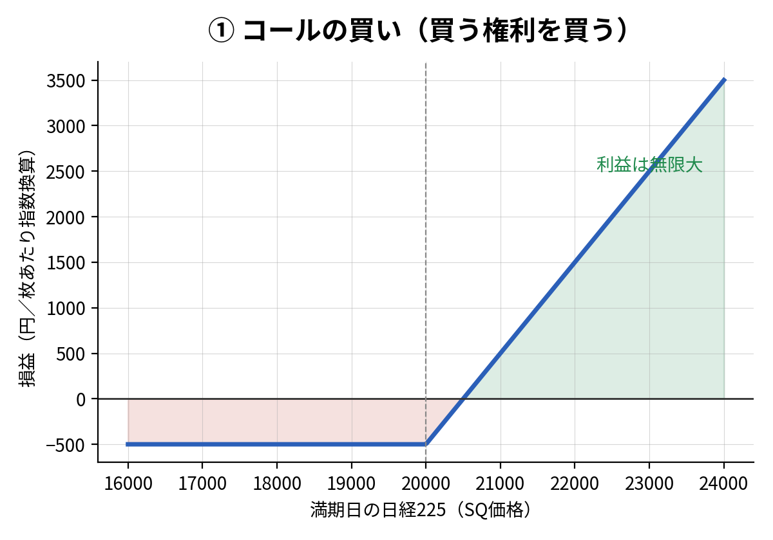
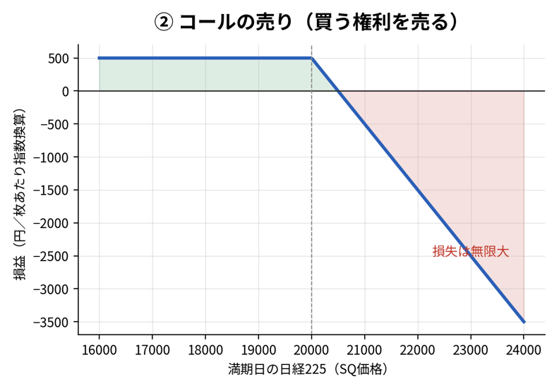
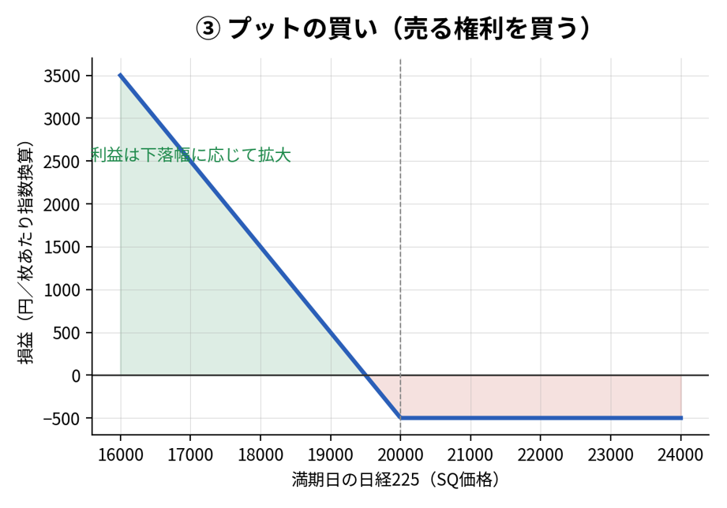
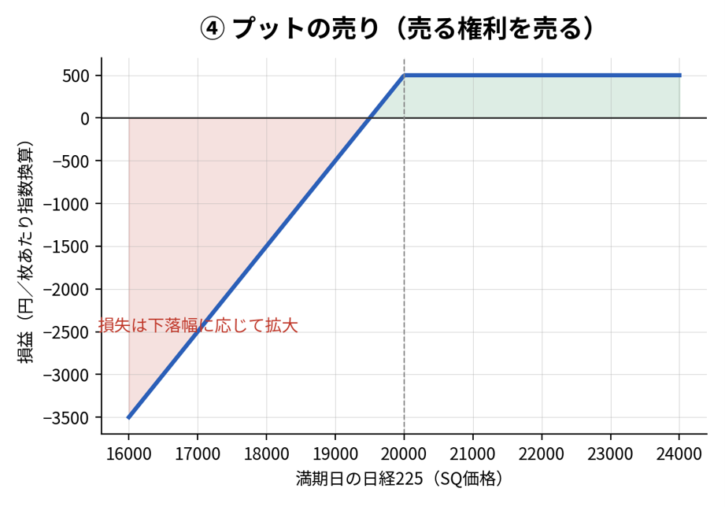

日経225オプションを例にした実務ガイド
「株価指数そのもの」の売買ではなく、事前に決めた価格で売買する「権利」を売買する取引。満期日があるのが特徴。
| 先物 | 指数そのものの売買。 |
| オプション | 指数を売買する「権利」の売買。 |
| 権利の種類 | 「買う権利」＝コール と 「売る権利」＝プット の2種類。 |
| 権利の行使 | 「買うこと」 と 「売ること」 の2種類。 |
| 組み合わせ | 取引の組み合わせは、合計4パターン＝(権利の種類 ２種類）×(権利の行使 ２種類) |
オプションには必ず「満期日」があり、この満期の区分を限月（げんげつ）と呼ぶ。同じ権利行使価格・コール/プットでも、限月が違えば別銘柄として扱われる。
| 粒度 | 内容 | 日経225オプションでの位置づけ |
|---|---|---|
| マンスリー（月次限月） | 毎月第2金曜日が満期日 | 基本となる限月。もっとも流動性が集中しやすい |
| クオータリー（3・6・9・12月限） | 四半期ごとの限月。先物とオプションが同時に清算される | 「メジャーSQ」と呼ばれ、相場が動意づきやすい |
| ウィークリー（週次限月） | 第2金曜日以外の毎週金曜日が満期日 | 短期イベント（経済指標・金融政策会合等）向けの低プレミアム限月 |
日経225オプションでは、これらを組み合わせて常時27限月が並行して上場されている（8年先までの6・12月限16本＋1年6か月先までの3・9月限3本＋直近の毎月限8本）。一方、個別株オプション（かぶオプ）は流動性が薄いため常時4限月に絞って上場されている。
オプション取引は、次の4パターンのいずれかに分類されます。
| 番号 | 取引のパターン | 取引の意味 | 取引の狙い |
|---|---|---|---|
| ① | 「コール」の買い | 「買う権利」の買い | 上昇する（局面）と予想し利益を狙う |
| ② | 「コール」の売り | 「買う権利」を売る | 上昇しない（局面）と予想し利益を狙う |
| ③ | 「プット」の買い | 「売る権利」を買う | 下落する（局面）と予想し利益を狙う／保有資産のヘッジ |
| ④ | 「プット」の売り | 「売る権利」を売る | 下落しない（局面）と予想し利益を狙う |
満期日の日経225の水準（横軸）に対して損益（縦軸）がどう動くかを示す。「権利行使価格」を境に損益が折れ曲がる。


満期日の日経225の水準（横軸）に対して損益（縦軸）がどう動くかを示す。「権利行使価格」を境に損益が折れ曲がる。


※リスク管理の観点から、まずは「買い」から始めるのが基本。「売り」は損失無限大のリスクがあり証拠金管理が必須となる。
先物の買いは指数が下落すればするほど損失も無限大に拡大するが、オプションの買いは損失があらかじめ支払ったプレミアムに限定される点が最大の違い。
オプション価格（プレミアム）は、次の2つの要素の合計で成り立つ。
| 要素 | 内容 |
|---|---|
| 本質的価値 | 「今すぐ権利行使したらいくら得か」を示す価値。 コールなら「日経225の現在値－権利行使価格」、プットなら「権利行使価格－日経225の現在値」（マイナスの場合は0） |
| 時間的価値 | 満期までにまだ有利な方向へ動くかもしれない「可能性」に対する価値。満期までの残存日数が長いほど、また予想される値動きの大きさ（インプライド・ボラティリティ）が高いほど大きくなる |
| 状態 | 意味 |
|---|---|
| ITM（イン・ザ・マネー） | 本質的価値がプラスの状態。権利行使すれば得になる |
| ATM（アット・ザ・マネー） | 権利行使価格と現在値がほぼ同じ状態 |
| OTM（アウト・オブ・ザ・マネー） | 本質的価値がゼロの状態。プレミアムは時間的価値のみで構成される |
| 方法 | 内容 | タイミング |
|---|---|---|
| ① 転売・買戻し | 満期日前にオプション価格（プレミアム）を反対売買して決済する | 満期日まで自由なタイミング |
| ② 権利行使／放棄 | 満期日にSQ価格で自動的に権利行使または権利放棄される（売り方は権利割当または権利消滅） | 満期日（SQ日）のみ |
「満期日にしか権利行使できないか」「満期前でも自由に権利行使できるか」は、対象によって異なる。この違いをタイプで区別する。
| タイプ | 権利行使できるタイミング | 該当する商品の例 |
|---|---|---|
| ヨーロピアンタイプ | 満期日（SQ日）にのみ権利行使可能。実際には自動で判定されるため、投資家が自分で行使を判断する必要はない | 日経225オプション、TOPIXオプション、個別株オプション（かぶオプ） |
| アメリカンタイプ | 取引開始日から満期日まで、いつでも権利行使が可能 | 米国株オプション、JGB先物オプション |
銘柄：日経225オプション 2015年6月限 権利行使価格 20,000円 コール オプション価格 500円
※取引単位はオプション価格の1,000倍。つまり500円のオプションを1枚買うと取引価額は50万円になる。
| 買値（オプション価格） | 500円 |
| 売値（値上がり後） | 800円 |
| 損益計算 | （800円－500円）×1,000倍 ＝30万円の利益 |
| SQ価格（決済値） | 22,000円 |
| 権利行使価格 | 20,000円 |
| 支払ったオプション価格 | 500円 |
| 損益計算 | （22,000－20,000－500）×1,000倍 ＝150万円の利益 |
| SQ価格（決済値） | 18,000円（権利行使価格を下回る） |
| 結果 | 権利は自動的に放棄され、支払った50万円がそのまま損失になる |
| 補足 | 仮に無理に権利行使したとすれば250万円の損失。放棄したことで損失を200万円抑えられた（権利放棄は手数料なし） |
オプションの「買い方」は、あらかじめオプション価格（プレミアム）を全額支払うだけなので証拠金は不要。一方「売り方」は、権利を引き受ける義務を負うため、その義務を履行できる担保として証拠金の差し入れが必須になる。
| 要因 | 証拠金への影響 |
|---|---|
| 原資産（日経225）の価格変動 | 値動きが大きい・売建てが不利な方向に動くほど、必要証拠金は増加する |
| ボラティリティ（IV）の上昇 | 先行き不透明感が強まるほど、想定される損失幅が広がり証拠金も増加する |
| 満期までの残存期間 | 残存期間が長いほど、その間に相場が動く余地が大きいため証拠金は高くなりやすい |
| 用語 | 意味 |
|---|---|
| コール（CALL） | あらかじめ決めた価格で「買う権利」 |
| プット（PUT） | あらかじめ決めた価格で「売る権利」 |
| 権利行使価格 | あらかじめ決めた、権利を行使する際の取引価格（ストライク） |
| オプション価格（プレミアム） | 権利そのものの売買価格。市場で常に変動する |
| SQ日／SQ価格 | 満期日、およびその満期日に決済の基準となる価格 |
| 権利行使 | 満期日に、有利な場合に自動的に権利を実行すること |
| 権利放棄 | 満期日に、不利な場合に自動的に権利を破棄すること（手数料なし） |
| タイムディケイ | 満期日が近づくにつれてオプションの時間的価値が減少していく現象 |
| 限月（げんげつ） | 満期の区分。同じ権利行使価格でも限月が違えば別銘柄として扱われる |
| 本質的価値 | 今すぐ権利行使した場合に得られる価値（ITMの場合のみプラス） |
| 時間的価値 | 満期までに有利な方向へ動く可能性に対する価値。残存日数・IVに応じて変動 |
| インプライド・ボラティリティ（IV） | 市場が織り込んでいる、将来の値動きの大きさの予想値。プレミアムの水準に直結する |
| ヨーロピアンタイプ | 満期日にのみ権利行使できるタイプ。日経225オプション等はこちら |
| アメリカンタイプ | 満期日までいつでも権利行使できるタイプ。米国株オプション等はこちら |
| 証拠金 | オプションの「売り方」が義務履行の担保として差し入れる保証金。相場変動やIVの上昇で増減する |